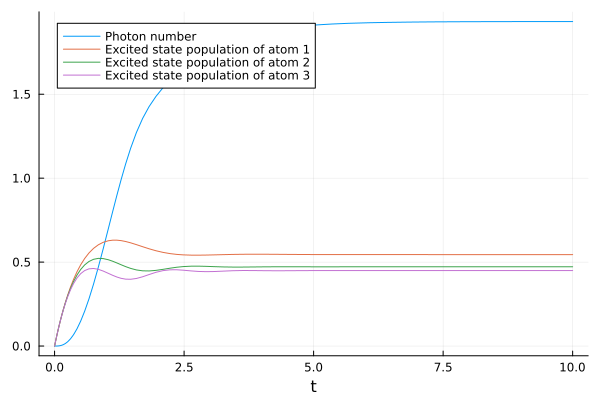

Symbolic Sums and Indices
Many physical systems contain multiple elements of the same kind, which basically do the same thing just with different rates. For these systems it is convenient to describe the Hamiltonian and the dissipative processes with indexed objects and sums. A well-known example is the Tavis-Cummings Hamiltonian, which describes the interaction of $N$ two-level atoms with a cavity mode according to the Hamiltonian
\[\begin{equation} H_\mathrm{TC} = \omega_c a^† a + \sum_i^N \omega_i \sigma_i^{22} + \sum_i^N g_i (a^\dagger \sigma_i^{12} + a \sigma_i^{21}). \end{equation}\]
In principle we can write down and derive the equations for all $N$ atoms explicitly, but this can take a long time for large $N$. The more practical and elegant approach is to derive the equations for averages of indexed operators and insert all possible number combinations afterwards. The implementation of symbolic sums and indices allows for exactly this.
Implementation
Index
The main tool to use symbolic summations is the Index object. This object has four different fields, which all need to be specified upon construction. These fields consist of the full HilbertSpace h, a name, which is just a generic symbol, a range, which can either consist of again a symbol or a concrete number and a specific Hilbert space aon, which defines the space on which operators, that inherit the Index entity, act on. This means that an Index, for a NLevelSpace can only be used by Transition operators. In the example below, two indices are defined equivalently, as well as a third one being defined acting on the FockSpace of the defined ProductSpace h.
using QuantumCumulants
@cnumbers N
ha = NLevelSpace(:atoms,2)
hc = FockSpace(:cavity)
h = hc ⊗ ha
i = Index(h,:i,N,ha)
i2 = Index(h,:i,N,2) #equivalent definition
n = Index(h,:n,5,hc)Index(ℋ(cavity) ⊗ ℋ(atoms), :n, 5, 1)
IndexedOperators
Operators, such as the quantum harmonic destruction operator Destroy or the Transition operator can be associated with an Index of the corresponding Hilbert space by creating a so called IndexedOperator. This object consists of two fields, namely the operator itself and an Index. Below, there are two IndexedOperator entities created on the two different Hilbert spaces defined previously.
σ(x,y,z) = IndexedOperator(Transition(h,:σ,x,y),z)
a(z) = IndexedOperator(Destroy(h,:a),z)a (generic function with 1 method)
In the above example, we defined both indexed operators σ and a as callable Instances with the attribute-variable z. These can now be used to easily create operators, that act specifically with their associated index.
a(n)*σ(2,2,i)\[{a}_{n} {\sigma}_{i}^{{22}}\]
Similar to operators, one can also create so called IndexedVariable objects, which consist simply of a name and an index.
gi = IndexedVariable(:g,i)\[{g}_{i}\]
Summations
As for now, we only created single instances of indexed operators. These operators and variables can now be used to define symbolic summations, which can then again be used in defining a Hamiltonian and deriving equations of motion for specific operator averages. Such a summation needs two arguments to be constructed, the term, over which the summation shall sum over, and an Index, over which the sum runs. As an example, we define below a simple sum over a single indexed operator.
∑(σ(2,2,i),i)\[\underset{i}{\overset{N}{\sum}} {σ}_{i}^{{22}}\]
As can be seen above, a sum with a single running-index can be created using the ∑ (\sum) command. Other equivalent functions are Σ (\Sigma) and the SingleSum() constructor. These constructors can also take a third optional argument specifying a set of indices, which are non equivalent to the summation index.
j = Index(h,:j,N,2)
∑(σ(2,2,i),i,[j])\[\underset{i ≠j }{\overset{N}{\sum}} {σ}_{i}^{{22}}\]
Similar to this one can also create summations over up to two different running-indices:
∑(a(n)*σ(2,1,i),i,n)\[\underset{i}{\overset{N}{\sum}} \underset{n}{\overset{5}{\sum}} {a}_{n} {σ}_{i}^{{21}}\]
These two running-indices do not need to act on different Hilbert spaces. However, for indices acting on the same Hilbert space, a simplification occurs, as shown below.
k = Index(h,:k,N,ha)
l = Index(h,:l,N,ha)
∑(σ(2,1,k)*σ(1,2,l),k,l)\[\underset{k{\ne}l}{\overset{N}{\sum}} \underset{l{\ne}k}{\overset{N}{\sum}} {\sigma}_{l}^{{12}} {\sigma}_{k}^{{21}} + \underset{k}{\overset{N}{\sum}} {\sigma}_{k}^{{22}}\]
If two indices, acting on the same Hilbert space, meet inside of a sum, the special case, where the numeric values of both indices are the same, i.e l=k, is calculated immediately. This can also be observed, when a symbolic sum is multiplied with an IndexedOperator, that is acting on the same Hilbert space as the summation-index.
∑(σ(2,2,k),k) * σ(2,1,l)\[\underset{k{\ne}l}{\overset{N}{\sum}} {\sigma}_{k}^{{22}} {\sigma}_{l}^{{21}} + {\sigma}_{l}^{{21}}\]
Short Example
We will briefly go over the entire process of defining a Hamiltonian, the derivation of equations and solving these equations numerically. For this example we will consider N 2-level atoms in a single mode Cavity.
We start by defining all indices and operators and create the Hamiltonian.
using QuantumCumulants
ha = NLevelSpace(:atoms,2)
hc = FockSpace(:cavity)
h = hc ⊗ ha
@cnumbers N Δ κ γ ν
i = Index(h,:i,N,ha)
j = Index(h,:j,N,ha)
@qnumbers b::Destroy(h)
σ(x,y,z) = IndexedOperator(Transition(h,:σ,x,y),z)
gi = IndexedVariable(:g,i)
H = Δ*b'*b + ∑(gi*(b*σ(2,1,i) + b'*σ(1,2,i)),i)\[\underset{i}{\overset{N}{\sum}} {g}_{i} b {\sigma}_{i}^{{21}} + \underset{i}{\overset{N}{\sum}} {g}_{i} b^\dagger {\sigma}_{i}^{{12}} + \Delta b^\dagger b\]
We continue by defining the starting operators ops, for which the equations are calculated, as well as the Jump operators J with their corresponding rates. It is important to note here, that the indexed operators, for which these equations are calculated need to have an Index, which is not yet used in the Hamiltonian, jumps or rates. We can then create the first set by simply calling the meanfield function. Note that if an indexed operator $J_i$ is used as jump operator, the following dissipative term is created
\[\begin{equation} \frac{1}{2} \sum_{j} R_{i} \bigg( 2 J_i^\dagger \mathcal{O} J_i - \mathcal{O} J_i^\dagger J_i - J_i^\dagger J_i \mathcal{O} \bigg). \end{equation}\]
The corresponding rate can, but does need to be an indexed variable. However, if it is, then the index of variable needs to match with the operator.
ops = [b'b, σ(2,2,j)]
J = [b, σ(1,2,i), σ(2,1,i)]
rates = [κ, γ, ν]
eqs = meanfield(ops,H,J;rates=rates,order=2)\[\begin{align} \frac{d}{dt} \langle b^\dagger b\rangle =& 1 i \underset{i}{\overset{N}{\sum}} {g}_{i} \langle b {\sigma}_{i}^{{21}}\rangle -1 i \underset{i}{\overset{N}{\sum}} {g}_{i} \langle b^\dagger {\sigma}_{i}^{{12}}\rangle -1.0 \kappa \langle b^\dagger b\rangle \\ \frac{d}{dt} \langle {\sigma}_{j}^{{22}}\rangle =& \nu + 1 i {g}_{j} \langle b^\dagger {\sigma}_{j}^{{12}}\rangle -1.0 \gamma \langle {\sigma}_{j}^{{22}}\rangle -1.0 \nu \langle {\sigma}_{j}^{{22}}\rangle -1 i {g}_{j} \langle b {\sigma}_{j}^{{21}}\rangle \end{align}\]
We can then complete the set of equations by simply calling the complete function.
eqs_comp = complete(eqs)Evaluate and Scale
The equations still contain symbolic summations and indices. Until now, we did not specify a numerical value for the upper boundaries of the summations, meaning the used N still has no numerical assignment. There are now two different cases to create the set of equations with a specific number of elements. We can either construct all equations for N individual atoms with the function evaluate or we assume that all particles behave identical and create the equations with the function scale. The latter uses the symmetry properties of identical particles, which can substantially reduce the number of equations.
In this example we use evaluate for $N=3$ atoms. We can specify the numerical value of $N$ to 3 within the kwarg limits.
evaled = evaluate(eqs_comp;limits=(N=>3))The last set of equations are now in a numerical solvable form, that we can convert to an ODESystem as defined in ModelingToolkit, which can be solved numerically with OrdinaryDiffEq. Furthermore we give each atom a different coupling strength g. This can now be done by using the value_map function to create a parameter mapping for the ODEProblem. In this case we give as coupling strength a vector with three different values.
# Generate an ODESystem
using ModelingToolkit
@named sys = ODESystem(evaled)
# Solve the system using the OrdinaryDiffEq package
using OrdinaryDiffEq
u0 = zeros(ComplexF64,length(evaled))
p = [Δ, gi, γ, κ, ν]
p0 = [0,[0.75,1.2,1.5],0.25,1,1.5]
p_ = value_map(p,p0;limits=(N=>3))
prob = ODEProblem(sys,u0,(0.0,10.0),p_)
sol = solve(prob,RK4())WARNING: using ModelingToolkit.complete in module ex-symbolic_sums conflicts with an existing identifier.
Just as with variables in ModelingToolkit, the solution of the respective averages can be accessed with a getindex method. In the following we extract and plot the photon number and the atomic excited state population of each atom by indexing the solution:
using Plots
n = real.(sol[b'*b])
pe = [real.(sol[σ(2,2,i)]) for i = 1:3]
pl = plot(sol.t, n, label="Photon number", xlabel="t")
for i = 1:3
plot!(sol.t, pe[i], label="Excited state population of atom $(i)")
end"/home/runner/work/QuantumCumulants.jl/QuantumCumulants.jl/docs/build/symbolic_sums.svg"
